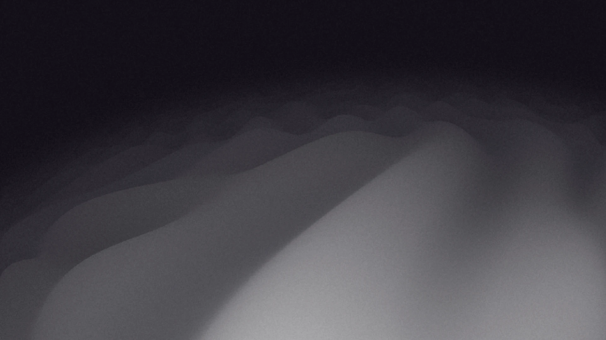

作品集
关于刘颖
工作经历
深圳乐易网络有限公司 平面设计师（三维）
- 买量素材独立制作，平台主要为 Unity 3D、COCOS、AI。
- 针对部门素材分散、查找困难的痛点，主导搭建素材标签化管理软件，建立部门共享灵感库。
- 制作规范与流程标准化，制定《场景质量基础标准框架》并完善 COCOS 引擎 SOP。
- 年度投放数据个人排名依次为第 6 名、第 8 名、第 1 名，数据稳居前 10%。
专业技能
- 基础平面
- Photoshop、Illustrator
- 游戏引擎
- Unity 3D、COCOS
- AI 工具
- Midjourney、Gemini、即梦
- 3D 软件
- C4D、Blender
- 剪辑软件
- Premiere Pro、剪映